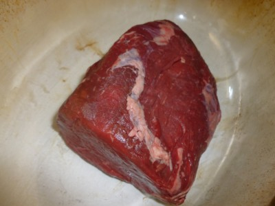
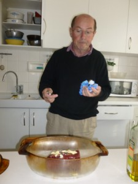
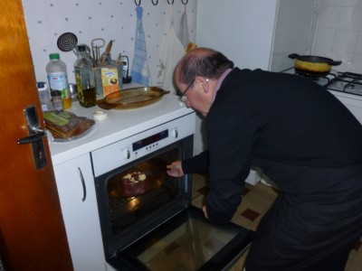
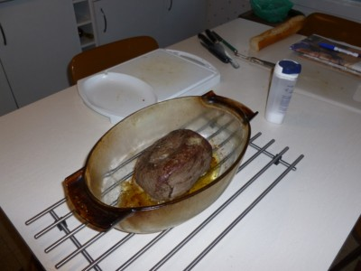
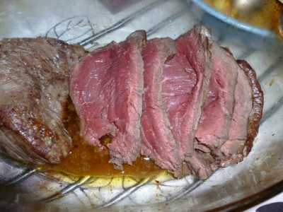

Recette
n° 249 : rôti de boeuf du chef
Michel Pioger
Ingrédients pour 6 personnes
1 - 900 g de rumsteak

2 - 4 cuillers à soupe d'huile d'olive
3 - 4 cuillers à soupe de beurre
5 - une grosse pincée de gros sel
6 - une grosse pincée de poivre
Préparation
1 - préchauffer le four à 240C
2 - dans un plat à hauts bords allant au four, mettre 2 cuillers d'huile

3 - y déposer ensuite la viande
4 - sur la viande appliquer le beurre en pommade et les deux autres cuillers d'huile

5 - enfourner à four chaud et laisser cuire entre 25 et 30 minutes suivant qu'on aime bien cuit ou pas


6 - sortir, saler, poivrer, découper et servir aussitôt

Observations
1 - recette effectuée à Quiberon le 22 septembre
2011 par le chef Michel Pioger en personne : excellent !
2 - se sert avec des pommes de terre rôties, du chef Michel
Pioger également (cf. recette n°250) : attention au timing
car viande et patates doivent être servies chaudes et
simultanément.